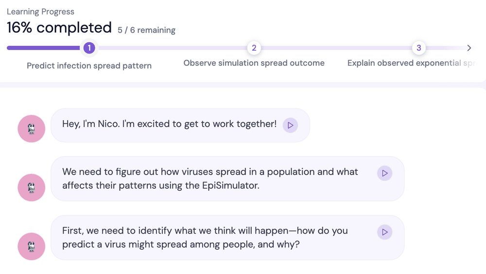
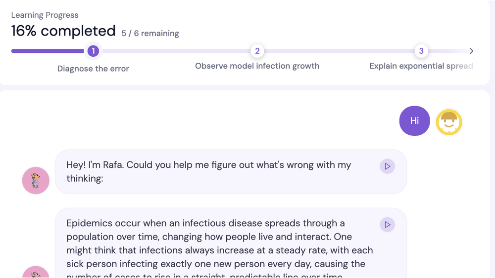
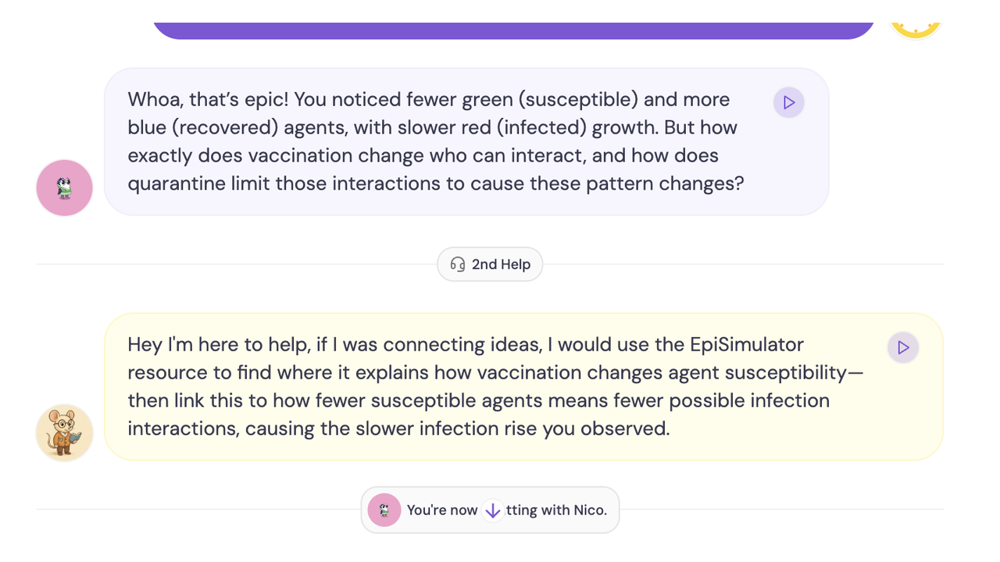
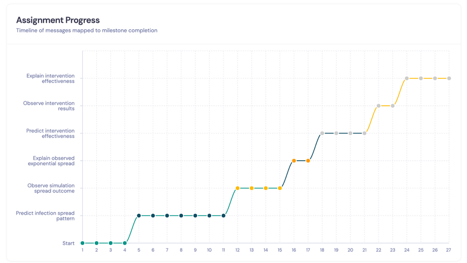

🦠 Watch an Outbreak Unfold
Colour-coded agents move through the town while susceptible, exposed, infected, recovered and dead counts update tick by tick.
SMILE Program · Project
Move one slider. Watch an outbreak change course.
EpiSimulator is an interactive epidemic-spread environment built with NetLogo and Unity and embedded in StudyBuds. Learners manipulate transmission and mobility, quarantine, and vaccination conditions, observe their population-level effects, and explain the emerging patterns with either an inquiry-driven peer agent or a teachable agent that holds misconceptions.
StudyBuds connects prediction, simulation-based experimentation, explanation, and two contrasting LLM-based agent roles in one milestone-driven learning sequence.
Scroll sideways for more →
Colour-coded agents move through the town while susceptible, exposed, infected, recovered and dead counts update tick by tick.
Both conditions run six milestones, but the peer track opens by predicting spread while the teachable track opens by diagnosing the agent's error.

The inquiry-driven peer agent asks the questions, holding back progress until the learner puts predictions and observations into words.

The teachable agent opens with a wrong model, that infections rise in a straight predictable line, and the learner has to correct it.

A Get Help button offers escalating hints that redirect learners to the simulator rather than handing over the answer.

Every message is mapped to a milestone, turning a single conversation into a visible learning trajectory.
Dr. Man Echo Su (PI, Project Lead)
NetLogo and Unity simulation embedded in the StudyBuds learning platform.
EpiSimulator is a free educational tool.